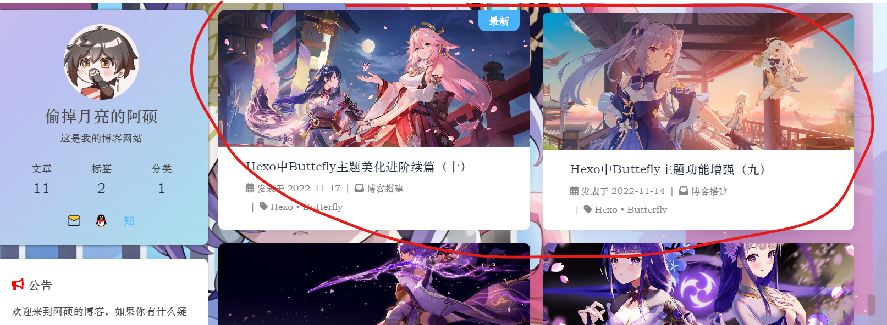
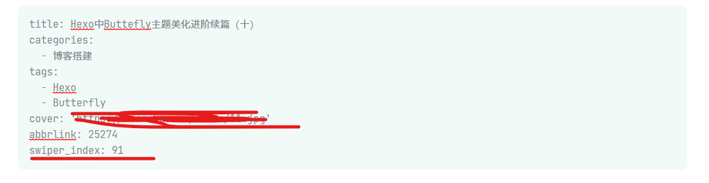
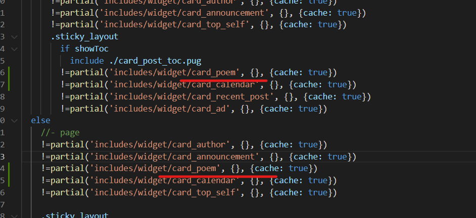
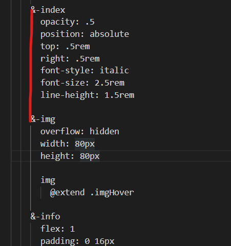

原文地址：Hexo中Buttefly主题美化进阶续篇（十） | 偷掉月亮 (moonshuo.cn)
大家好，我是阿硕，专注与后端，略懂前端的一个菜鸟程序猿，今天将为大家讲述Butterfly主题的我们页面的整体美化，其实前面已经出过这个配置，但是由于字数的限制，只能再起一个篇章
双栏布局
效果

首先执行以下的命令
1
npm i hexo-butterfly-article-double-row --save
在网站的根配置文件 下添加以下的代码
1 2 3
butterfly_article_double_row: enable: true
这样之后我们的页码会出现一个小bug，在自定义css文件中加入下面的代码
调整页码的位置
1 2 3 4 5
#pagination { width : 100% ; margin : auto; }
hexo clean,hexo g,hexo s即可完成
首页轮播图
首先执行以下的代码
1
npm install hexo-butterfly-swiper --save
在主配置文件中引入轮播图组件
1 2 3 4 5 6 7 8 9 10 11 12 13 14 15 16
# hexo-butterfly-swiper # see https://akilar.top/posts/8 e1264d1/ swiper: enable: true # 开关 priority: 5 # 过滤器优先权 enable_page: all # 应用页面 timemode: date # date/updated layout: # 挂载容器类型 type: id name: recent-posts index: 0 default_descr: swiper_css: https://unpkg.zhimg.com/hexo-butterfly-swiper/lib/swiper.min.css swiper_js: https://unpkg.zhimg.com/hexo-butterfly-swiper/lib/swiper.min.js custom_css: https://unpkg.zhimg.com/hexo-butterfly-swiper/lib/swiperstyle.css custom_js: https://unpkg.zhimg.com/hexo-butterfly-swiper/lib/swiper_init.js
下面是博主的配置，博主将这些文件另存下载下来，放在了本地，大家可以自由选择
1 2 3 4 5 6 7 8 9 10 11 12 13 14
swiper: enable: true priority: 5 enable_page: all timemode: date layout: type: id name: recent-posts index: 0 default_descr: swiper_css: /css/swiper.min.css swiper_js: /js/swiper.min.js custom_css: /css/swiperstyle.css custom_js: /js/swiper_init.js
现在我们想要使文章进行轮播，那么现在我们需要在文章的写作时，在front_matter中添加swiper_index，数值越大，越首先进行出现

而关于描述的小心，大家同样可以添加description标签进行操作
今日诗词
在下面的位置创建，复制以下的代码..\themes\butterfly\layout\includes\widget\card_poem.pug
1 2 3 4 5 6 7 8 9 10 11 12 13 14 15 16 17 18
#card-poem .card-widget #poem_sentence #poem_info #poem_dynasty #poem_author script(src ='https://cdn.jsdelivr.net/npm/js-heo@1.0 .11 /poem/jinrishici.js', charset=' utf-8 ') script(type=' text/javascript'). jinrishici.load(function(result) { var sentence = document.querySelector("#poem_sentence") var author = document.querySelector("#poem_author") var dynasty = document.querySelector("#poem_dynasty") var sentenceText = result.data.content sentenceText = sentenceText.substr(0, sentenceText.length - 1); sentence.innerHTML = sentenceText dynasty.innerHTML = result.data.origin.dynasty author.innerHTML = result.data.origin.author + ' 《' + result.data.origin.title + ' 》' });
引入组件
1
!=partial('includes/widget/card_poem', {}, {cache: true})
…\themes\butterfly\layout\includes\widget\index.pug在index.pug中填写上述的代码

在主题配置文件中引入下面的代码
1 2 3
- <link rel="stylesheet" type="text/css" href="https://cdn.jsdelivr.net/npm/js-heo@1.0.11/mainColor/heoMainColor.css"> - <link rel="stylesheet" type="text/css" href="https://cdn.jsdelivr.net/npm/js-heo@1.0.11/poem/poem.css">
大家有能力还是可以将这些文件存储在本地
原版文章渲染函数
博主根据原作者的修改，但是发现了一些bug，自己只能删除一些代码，达到一个效果，大家可以参考原作者Butterfly
分类标签归档页增加文章索引 | Eurkon 的修改，也可以根据博主进行修修改
更改方式
首先打开下面的文件，将第一行变为下面的代码
1
mixin articleSort(posts, current)
修改归档、分类等页面
路径：..\themes\butterfly\layout\archive.pug
修改：
1 2 3
+articleSort(page.posts ) 修改为 +articleSort(page.posts , page.current )
路径：..themes\butterfly\layout\category.pug
1 2 3
+articleSort(page.posts ) 修改为 +articleSort(page.posts , page.current )
路径：..\themes\butterfly\layout\tag.pug
1 2 3
+articleSort(page.posts ) 修改为 +articleSort(page.posts , page.current )
增加文章索引样式
路径：..\themes\butterfly\source\css_page\archives.styl
复制以下代码，注意格式，hexo 三连即可
1 2 3 4 5 6 7 8
&-index opacity : .5 position: absolute top: .5rem right: .5rem font-style: italic font-size: 2.5rem line-height: 1.5rem

旋转小风车
在主题配置文件中，更改如下，下面对应的为小风车的编号，可以更改为自己的编号
1 2 3 4 5
beautify: enable: true field: post title-prefix-icon: '\f863' title-prefix-icon-color: "#F47466"
复制以下代码到css文件中、
1 2 3 4 5 6 7 8 9 10 11 12 13 14 15 16 17 18 19 20 21 22 23 24 25 26 27 28 29 30 31 32 33 34 35 36 37 38 39 40 41 42 43 44 45 46 47 48 49 50 51 52 53 54 55 56 57 58 59 60 61 62 63 64 65 66 67 68 69 70 71 72 73 74 75 76 77 78 79 80 81 82 83 84 85 86 87 88
h1 ::before ,h2 ::before ,h3 ::before ,h4 ::before ,h5 ::before ,h6 ::before { -webkit-animation : ccc 4s linear infinite; animation : ccc 4s linear infinite; } @-webkit-keyframes ccc { 0% { -webkit-transform : rotate (0deg ); transform : rotate (0deg ); } to { -webkit-transform : rotate (-1turn ); transform : rotate (-1turn ); } } @keyframes ccc { 0% { -webkit-transform : rotate (0deg ); transform : rotate (0deg ); } to { -webkit-transform : rotate (-1turn ); transform : rotate (-1turn ); } } #content-inner .layout h1 ::before { color : #ef50a8 ; margin-left : -1.55rem ; font-size : 1.3rem ; margin-top : -0.23rem ; } #content-inner .layout h2 ::before { color : #fb7061 ; margin-left : -1.35rem ; font-size : 1.1rem ; margin-top : -0.12rem ; } #content-inner .layout h3 ::before { color : #ffbf00 ; margin-left : -1.22rem ; font-size : 0.95rem ; margin-top : -0.09rem ; } #content-inner .layout h4 ::before { color : #a9e000 ; margin-left : -1.05rem ; font-size : 0.8rem ; margin-top : -0.09rem ; } #content-inner .layout h5 ::before { color : #57c850 ; margin-left : -0.9rem ; font-size : 0.7rem ; margin-top : 0rem ; } #content-inner .layout h6 ::before { color : #5ec1e0 ; margin-left : -0.9rem ; font-size : 0.66rem ; margin-top : 0rem ; } #content-inner .layout h1 :hover ,#content-inner .layout h2 :hover ,#content-inner .layout h3 :hover ,#content-inner .layout h4 :hover ,#content-inner .layout h5 :hover ,#content-inner .layout h6 :hover { color : var (--theme-color); } #content-inner .layout h1 :hover ::before ,#content-inner .layout h2 :hover ::before ,#content-inner .layout h3 :hover ::before ,#content-inner .layout h4 :hover ::before ,#content-inner .layout h5 :hover ::before ,#content-inner .layout h6 :hover ::before { color : var (--theme-color); -webkit-animation : ccc 6s linear infinite; animation : ccc 6s linear infinite; }
点击复制出现弹窗
2022年11月26日更新
自带的弹窗
其实这个butterfly主题自带弹窗功能，但是这个弹窗太丑了，在butterfly主题配置文件中,大家可以自行开启看一下，但是这个有点死板，不太灵活，大家想要配置可以看下这一篇文章
snackbar弹窗的调用
| Sianx’s Blog
1 2 3 4 5 6 7 8 9
snackbar: enable: fasle position: top-left bg_light: '#49b1f5' bg_dark: '#1f1f1f'
自定义弹窗
相比较来说，博主还是喜欢自定义弹窗，样式和内容的更改都比较简单，这里使用的是jquery与toastr.js进行改编
首先在自定义js文件中添加下面的文件，更多的用法参考GitHub
- CodeSeven/toastr：简单的javascript toast通知
1 2 3 4 5 6 7 8 9 10 11 12 13 14 15 16 17 18 19 20 21 22 23 24 25 26
document .addEventListener ("copy" , (function (e ) { toastr.options = { closeButton : false , debug : false , progressBar : true , positionClass : "toast-top-left" , onclick : null , showDuration : "300" , hideDuration : "300" , timeOut : "2500" , extendedTimeOut : "1000" , showEasing : "swing" , hideEasing : "linear" , showMethod : "fadeIn" , hideMethod : "fadeOut" }; toastr.success ("如果转载，请保留原文链接哦(●ˇ∀ˇ●)" ,"复制成功！！！" ); }));
然后在我们的butterfly主题配置文件中引入一下的js文件,还是有能力的小伙伴把文件存储在本地
1 2 3
<link href="https://cdn.bootcdn.net/ajax/libs/toastr.js/2.1.4/toastr.min.css" rel="stylesheet"> <script src="/js/copy.js"></script>
在自定义css文件复制以下的内容，博主这里将totatr.css文件改编一些，源文件链接，大家也可以自己下载改编原css地址 ，
在第135行可以插入图片，也可以插入动图，大小的话，大家更改图片像素大小即可，图片太大可能会不合适，
，还有这个是使用到了jquery，没有引入的小伙伴需要引入jquery，如果引入的话，就不需要引入了，建议还是存储在本地。
1
<script src="https://cdn.bootcdn.net/ajax/libs/jquery/3.6.1/jquery.min.js" ></script>
1 2 3 4 5 6 7 8 9 10 11 12 13 14 15 16 17 18 19 20 21 22 23 24 25 26 27 28 29 30 31 32 33 34 35 36 37 38 39 40 41 42 43 44 45 46 47 48 49 50 51 52 53 54 55 56 57 58 59 60 61 62 63 64 65 66 67 68 69 70 71 72 73 74 75 76 77 78 79 80 81 82 83 84 85 86 87 88 89 90 91 92 93 94 95 96 97 98 99 100 101 102 103 104 105 106 107 108 109 110 111 112 113 114 115 116 117 118 119 120 121 122 123 124 125 126 127 128 129 130 131 132 133 134 135 136 137 138 139 140 141 142 143 144 145 146 147 148 149 150 151 152 153 154 155 156 157 158 159 160 161 162 163 164 165 166 167 168 169 170 171 172 173 174 175 176 177 178 179 180 181 182 183 184 185 186 187 188 189 190 191 192 193 194 195 196 197 198 199 200 201 202 203 204 205 206 207 208
.toast-title { font-weight : bold; } .toast-message { -ms-word-wrap : break-word; word-wrap : break-word; } .toast-message a ,.toast-message label { color : #FFFFFF ; } .toast-message a :hover { color : #CCCCCC ; text-decoration : none; } .toast-close-button { position : relative; right : -0.3em ; top : -0.3em ; float : right; font-size : 20px ; font-weight : bold; color : #FFFFFF ; -webkit-text-shadow : 0 1px 0 #ffffff ; text-shadow : 0 1px 0 #ffffff ; opacity : 0.8 ; -ms-filter : progid:DXImageTransform.Microsoft.Alpha (Opacity=80 ); filter : alpha (opacity=80 ); line-height : 1 ; } .toast-close-button :hover ,.toast-close-button :focus { color : #000000 ; text-decoration : none; cursor : pointer; opacity : 0.4 ; -ms-filter : progid:DXImageTransform.Microsoft.Alpha (Opacity=40 ); filter : alpha (opacity=40 ); } .rtl .toast-close-button { left : -0.3em ; float : left; right : 0.3em ; } button .toast-close-button { padding : 0 ; cursor : pointer; background : transparent; border : 0 ; -webkit-appearance: none; } .toast-top-center { top : 0 ; right : 0 ; width : 100% ; } .toast-bottom-center { bottom : 0 ; right : 0 ; width : 100% ; } .toast-top-full-width { top : 0 ; right : 0 ; width : 100% ; } .toast-bottom-full-width { bottom : 0 ; right : 0 ; width : 100% ; } .toast-top-left { top : 12px ; left : 12px ; } .toast-top-right { top : 12px ; right : 12px ; } .toast-bottom-right { right : 12px ; bottom : 12px ; } .toast-bottom-left { bottom : 12px ; left : 12px ; } #toast-container { position : fixed; z-index : 999999 ; pointer-events : none; } #toast-container * { -moz-box-sizing : border-box; -webkit-box-sizing : border-box; box-sizing : border-box; } #toast-container > div { position : relative; pointer-events : auto; overflow : hidden; margin : 0 0 6px ; padding : 15px 15px 15px 50px ; width : 300px ; -moz-border-radius : 3px 3px 3px 3px ; -webkit-border-radius : 3px 3px 3px 3px ; border-radius : 3px 3px 3px 3px ; background-position : 15px center; background-repeat : no-repeat; color : #0e0808 ; opacity : 1.0 ; -ms-filter : progid:DXImageTransform.Microsoft.Alpha (Opacity=80 ); filter : alpha (opacity=80 ); } #toast-container > div .rtl { direction : rtl; padding : 15px 50px 15px 15px ; background-position : right 15px center; } #toast-container > div :hover { -moz-box-shadow : 0 0 12px #000000 ; -webkit-box-shadow : 0 0 12px #000000 ; box-shadow : 0 0 12px #000000 ; opacity : 1 ; -ms-filter : progid:DXImageTransform.Microsoft.Alpha (Opacity=100 ); filter : alpha (opacity=100 ); cursor : pointer; } #toast-container > .toast-success { background-image : url ("成功.png" ) !important ; } #toast-container .toast-top-center > div ,#toast-container .toast-bottom-center > div { width : 300px ; margin-left : auto; margin-right : auto; } #toast-container .toast-top-full-width > div ,#toast-container .toast-bottom-full-width > div { width : 96% ; margin-left : auto; margin-right : auto; } .toast { background-color : #030303 ; } .toast-success { background-color : #ffffff ; } .toast-progress { position : absolute; left : 0 ; bottom : 0 ; height : 4px ; background-color : #000000 ; opacity : 0.4 ; -ms-filter : progid:DXImageTransform.Microsoft.Alpha (Opacity=40 ); filter : alpha (opacity=40 ); } @media all and (max-width : 240px ) { #toast-container > div { padding : 8px 8px 8px 50px ; width : 11em ; } #toast-container > div .rtl { padding : 8px 50px 8px 8px ; } #toast-container .toast-close-button { right : -0.2em ; top : -0.2em ; } #toast-container .rtl .toast-close-button { left : -0.2em ; right : 0.2em ; } } @media all and (min-width : 241px ) and (max-width : 480px ) { #toast-container > div { padding : 8px 8px 8px 50px ; width : 18em ; } #toast-container > div .rtl { padding : 8px 50px 8px 8px ; } #toast-container .toast-close-button { right : -0.2em ; top : -0.2em ; } #toast-container .rtl .toast-close-button { left : -0.2em ; right : 0.2em ; } } @media all and (min-width : 481px ) and (max-width : 768px ) { #toast-container > div { padding : 15px 15px 15px 50px ; width : 25em ; } #toast-container > div .rtl { padding : 15px 50px 15px 15px ; } }
参考文章
教程：butterfly
主题文章双栏布局插件 | 小冰博客 (zfe.space)
Butterfly美化：今日诗词侧边栏小组件，中国传统诗词文化
| 张洪Heo (zhheo.com)
Butterfly
分类标签归档页增加文章索引 | Eurkon